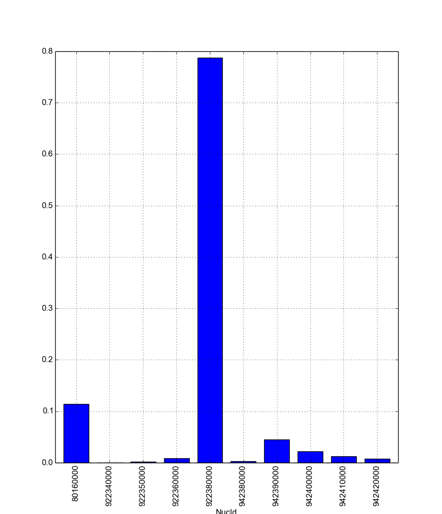

Cymetric Tutorial¶
This tutorial will describe how to use cymetric from the command line or using Python. It also discusses how to write your own metrics for custom analyses.
Cymetric is an extension of Cyclus, so it is assumed that Cyclus is already installed on your system. (If not, please visit Getting and Building Cyclus from Source.) Cymetric installation instructions are available on GitHub.
Cymetric operates by reading data from a Cyclus database, computing metrics, and writing those metrics back to the database. This way, previously seen metrics are stored for later retrieval. The dependencies between metrics are automatically computed and evaluated.
Without further ado, let’s dive in!
Command Line Usage¶
Cymetric ships with a command line utility, just called cymetric.
The command line tool is useful for quick feedback. It can show a list of
tables in a database or execute some code using a database, e.g., evaluating
a metric or quickly checking a plot.
Since cymetric is wholly dependent on Cyclus databases, you must supply a database as an argument on the command line. This will look something like the following:
$ cymetric database -flags
We’ll be using test.h5 and test.sqlite as our example databases here.
The sections below explain the flags for use on the command line.
Warning
Please note that cymetric may not work on the command line within its own directory.
Table Listing: -l¶
The first switch here, lowercase-L -l, simply lists the tables in the
database. Note that this may list more tables in the database than are
strictly part of the Cyclus interface, because of the need for Cyclus to
store metadata. Don’t be alarmed. Listing the current tables is easy:
$ cymetric test.h5 -l
AgentEntry
AgentStateAgent
AgentStateInventories
AgentState_agents_NullRegionInfo
...
BlobKeys
BlobVals
BuildSchedule
Compositions
DecayMode
Finish
Info
InputFiles
MaterialInfo
NextIds
Prototypes
Recipes
ResCreators
Resources
Snapshots
StringKeys
StringVals
Transactions
XMLPPInfo
Metrics that are generated will show up in this listing after they have been computed. All of the core Cyclus tables are denoted as root metrics, and they are listed here too. To understand the core tables included in a Cyclus database, please review the page Understanding the Database.
Code Execution: -e¶
Cymetric allows you to execute arbitrary code on metrics from the command line
with the -e flag. The code that you pass in is pure Python. Every metric
and root Cyclus table are assigned automatically to variable names that you
can use. Indexing the table variables will return the metric as a pandas DataFrame. For example, to print the
AgentEntry table, we would write AgentEntry[:] to get the table and
print(AgentEntry[:]) to display it after the -e flag:
$ cymetric test.h5 -e "print(AgentEntry[:])"
SimId AgentId Kind Spec Prototype ParentId Lifetime EnterTime
0 db805939-c565-404a-9483-adfb3da8b6d2 11 Region :agents:NullRegion SingleRegion -1 -1 0
1 db805939-c565-404a-9483-adfb3da8b6d2 12 Inst :cycamore:DeployInst SingleInstitution 11 -1 0
2 db805939-c565-404a-9483-adfb3da8b6d2 13 Facility :cycamore:Source UOX_Source 12 -1 1
3 db805939-c565-404a-9483-adfb3da8b6d2 14 Facility :cycamore:Source MOX_Source 12 -1 1
4 db805939-c565-404a-9483-adfb3da8b6d2 15 Facility :cycamore:BatchReactor Reactor1 12 -1 1
5 db805939-c565-404a-9483-adfb3da8b6d2 16 Facility :cycamore:BatchReactor Reactor2 12 -1 2
6 db805939-c565-404a-9483-adfb3da8b6d2 17 Facility :cycamore:BatchReactor Reactor3 12 -1 3
[7 rows x 8 columns]
Indexing a metric with an empty slice ([:]), none ([None]), or an ellipsis
([...]) will return the full metric. However, you can also index by condition
filters on the column names. The column names of the metric are thus also available for
use. For example, let’s just grab all of the facilities out of the entry table:
$ cymetric test.h5 -e "print(AgentEntry[Kind == 'Facility'])"
SimId AgentId Kind Spec Prototype ParentId Lifetime EnterTime
0 db805939-c565-404a-9483-adfb3da8b6d2 13 Facility :cycamore:Source UOX_Source 12 -1 1
1 db805939-c565-404a-9483-adfb3da8b6d2 14 Facility :cycamore:Source MOX_Source 12 -1 1
2 db805939-c565-404a-9483-adfb3da8b6d2 15 Facility :cycamore:BatchReactor Reactor1 12 -1 1
3 db805939-c565-404a-9483-adfb3da8b6d2 16 Facility :cycamore:BatchReactor Reactor2 12 -1 2
4 db805939-c565-404a-9483-adfb3da8b6d2 17 Facility :cycamore:BatchReactor Reactor3 12 -1 3
[5 rows x 8 columns]
Separate the conditions by commas (,) to apply multiple filters at the same
time:
$ cymetric test.h5 -e "print(AgentEntry[Kind == 'Facility', AgentId > 14])"
SimId AgentId Kind Spec Prototype ParentId Lifetime EnterTime
0 db805939-c565-404a-9483-adfb3da8b6d2 15 Facility :cycamore:BatchReactor Reactor1 12 -1 1
1 db805939-c565-404a-9483-adfb3da8b6d2 16 Facility :cycamore:BatchReactor Reactor2 12 -1 2
2 db805939-c565-404a-9483-adfb3da8b6d2 17 Facility :cycamore:BatchReactor Reactor3 12 -1 3
[3 rows x 8 columns]
Because code execution is just pure Python, we can do anything that we would be
able to do in Python. Suppose that we have a Materials metric with a Mass
column. We can compute this metric, pull the column out, multiply it by 42,
save the result to a variable, and then print this variable all via the following.
$ cymetric test.h5 -e "mass = Materials[:]['Mass'] * 42; print(mass)"
0 0.000000
1 0.000000
2 0.000000
3 0.000000
4 0.000000
5 0.000000
6 0.000000
7 0.000000
8 0.000000
9 0.000000
10 4.790314
11 0.007370
12 0.066327
13 0.368486
14 33.064222
...
462 0.493771
463 0.313213
464 0.350812
465 0.228541
466 40.917474
467 0.030567
468 0.011288
469 0.238031
470 0.092571
471 0.081648
472 0.034441
473 0.002762
474 0.008074
475 0.000965
476 0.002827
Name: Mass, Length: 477, dtype: float64
As a convenience, the following Python modules are available in the execution context under standard aliases. This prevents you from having to import them manually yourself.
| Module | Alias |
|---|---|
cymetric |
cym |
numpy |
np |
pandas |
pd |
uuid |
uuid |
matplotlib |
matplotlib |
matplotlib.pyplot |
plt |
This let’s you do neat things such as plot the metrics right from the command line. For example,
$ cymetric test.h5 -e "Materials[ResourceId == 15].plot(x='NucId', y='Mass', kind='bar'); plt.show()"
Will pop up with the following figure:
To write or not to write: --write and --no-write¶
Cymetric automatically writes an evaluated metric to the database. There are
some scenarios when you may not want this to happen. For example, you might
want your script to do many metric calculations and save the results elsewhere;
in this case, writing to the database is unneccessary. While writing is the
default functionality when you use the -e flag, the lack of writing
can be accomplished with the --no-write flag. In the example below, the
table will not be written to the database:
$ cymetric test.h5 --no-write -e "Materials[:]"
Since cymetric looks up an already evaluated metric in the database,
overwriting an existing table with a new one might be desired. This is where
the --write flag is useful:
$ cymetric test.h5 --write -e "Materials[:]"
Python Interface¶
While quick feedback is useful, it is more likely that cymetric will be of use in a script. Therefore, this section details how to employ Python to interact with cymetric. In addition to writing scripts to compute metrics and produce figures, this is essential for the development of new metrics.
Typically, it is recommended that you alias cymetric as cym, because
all of the important functionality lives here. To start, use the dbopen()
function to open up a database:
import cymetric as cym
db = cym.dbopen('test.sqlite')
Evaluating Metrics¶
The main purpose of cymetric is to evaluate metrics. The easiest way to do this
is via the eval() function. This accepts a metric name and a database and
returns a pandas DataFrame:
frame = cym.eval('Materials', db)
You may also optionally supply a list of 3-tuples representing the conditions to filter the metric on.
filtered_frame = cym.eval('Materials', db, conds=[('NucId', '==', 922350000)])
As was noted in the previous section, multiple filters can be applied at once.
filtered_frame = cym.eval('AgentEntry', db, conds=[('Kind', '==','Facility'), ('AgentId', '>', 14)])
However, if you are evaluating many metrics, this method will be
computationally inefficient. Calling eval() creates a new Evaluator
object each time a metric is evaluated. Since each Evaluator object reads
the database individually, this means eval() reads the database each time
it is called. Alternatively, there is a way to ensure the database only gets
read once by accessing the eval() functionality directly within an
Evaluator object. You can create an Evaluator instance with a single
database and call eval() from within it. For example,
evaler = cym.Evaluator(db)
frame1 = evaler.eval('Materials')
frame2 = evaler.eval('AgentEntry', conds=[('Kind', '==', 'Facility')])
And you can run with the data from there! We recommend learning pandas to get the most out of your analysis from this point.
Executing Code¶
Sometimes, you just have a code snippet as a string like you might run from the
command line, even though you are in Python. The exec_code() function gives
you easy access to the exact same capabilities that you have on the command line.
This function accepts the code string and the database:
cym.exec_code("print(AgentEntry[:])", db)
For more exciting capabilities, please explore the examples directory in the cymetric repository or ask us questions on the Cyclus users mailing list.
Writing Metrics¶
Naturally, you do not want to be limited to the metrics that come predefined by cymetric. You have your own data and your own analysis that you want to perform. It is easy to write metrics and fully hook into the cymetric tools.
A metric is a function that accepts a pandas Series, returns a
pandas DataFrame, and is decorated by the @metric() decorator found in
cymetric. The general format is as follows:
dependencies = [
('Table1', ('Col1', 'Col2'), 'Value1'),
('Table2', ('Col3',), 'Value2')
]
schema = [('Id', cym.INT), ('MetricValue', cym.DOUBLE)]
@cym.metric(name='MyMetric', depends=dependencies, schema=schema)
def my_metric(series):
one = series[0]
two = series[1]
#calculations and pandas manipulations go here
return dataframe
In the above, the @metric() decorator takes three arguments. The first is
the name of the metric (e.g., 'MyMetric'). Note that this can be
distinct from the function name.
The second is depends, which represents the metric dependencies. This is a
list of 3-tuples that represents which series to pull out of the database
and pass into the metric function (e.g., my_metric()). The entries in the
dependency list have three components. The first element is the table name as a
string (e.g., 'Table1'). The second element is a tuple of column names that
become the index of the series (e.g., ('Col1', 'Col2')). Finally, the last
element is the column of the table that becomes the values of the series (e.g.,
'Value1'). A metric may have as many dependencies as required. Circular
dependencies are not allowed.
Lastly, the @metric() decorator takes a schema argument. The schema is
defined by a list of 2-tuples. The first entry is the column name and the
second is the Cyclus database type. This represents the structure of the
metric table on disk and in Cyclus. Thus, it is highly tied to the Cyclus
type system, as represented in
cymetric. The DataFrame that is returned should have column names that match
the schema provided. It is generally a good idea to include a SimId column.
For a more concrete example, if you wanted to square the mass of materials as a
metric, you could write a MaterialsSquared metric.
deps = [('Materials', ('SimId', 'ResourceId', 'NucId'), 'Mass')]
schema = [('SimId', cym.UUID), ('ResourceId', cym.INT),
('NucId', cym.INT), ('MassSquared', cym.DOUBLE)]
@cym.metric(name='MaterialsSquared', depends=deps, schema=schema)
def mats_sqrd(series):
mats = series[0]
rtn = mats**2
rtn.name = 'MaterialsSquared'
rtn = rtn.reset_index()
return rtn
Note that to write this metric, no knowledge of the database or any filters is assumed. Cymetric handles all of these details for you!
If the pandas functionality seems mysterious to you, it may be beneficial to review a quick tutorial, 10 Minutes to pandas.
The above shows how easy it is to incorporate metrics that are computed via
cymetric. Moreover, Cyclus databases can be comprised of both default tables and custom tables. Cymetric also helps you
bring in data that might come a custom table in a Cyclus database. All you
need to do is use the root_metric() function somewhere. This simply accepts
the name of the table. For example,
my_table = cym.root_metric(name='MyTable')
And that is all!